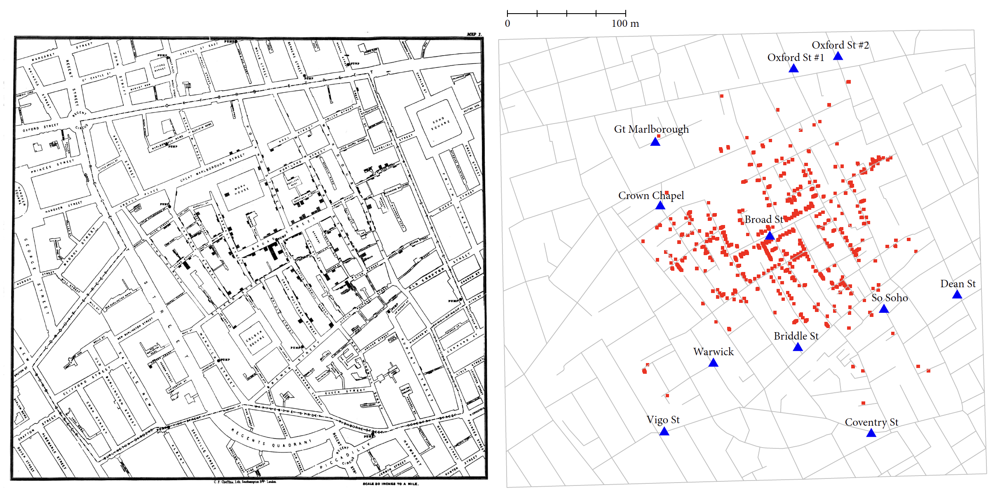
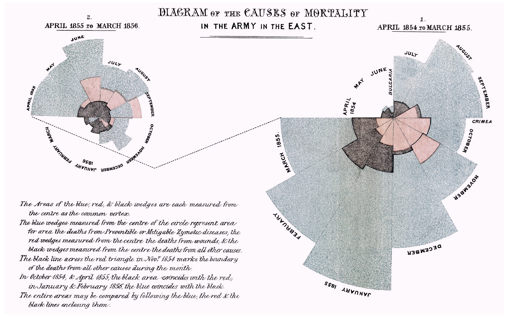
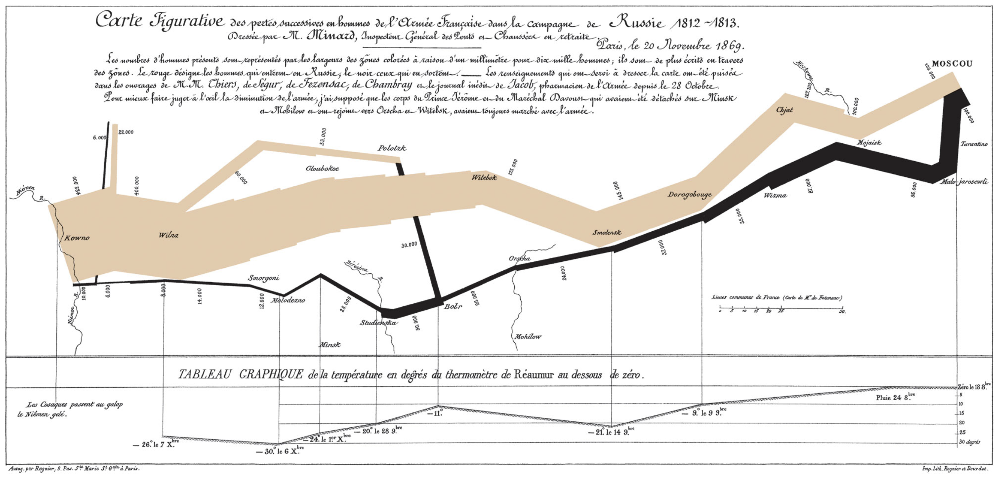
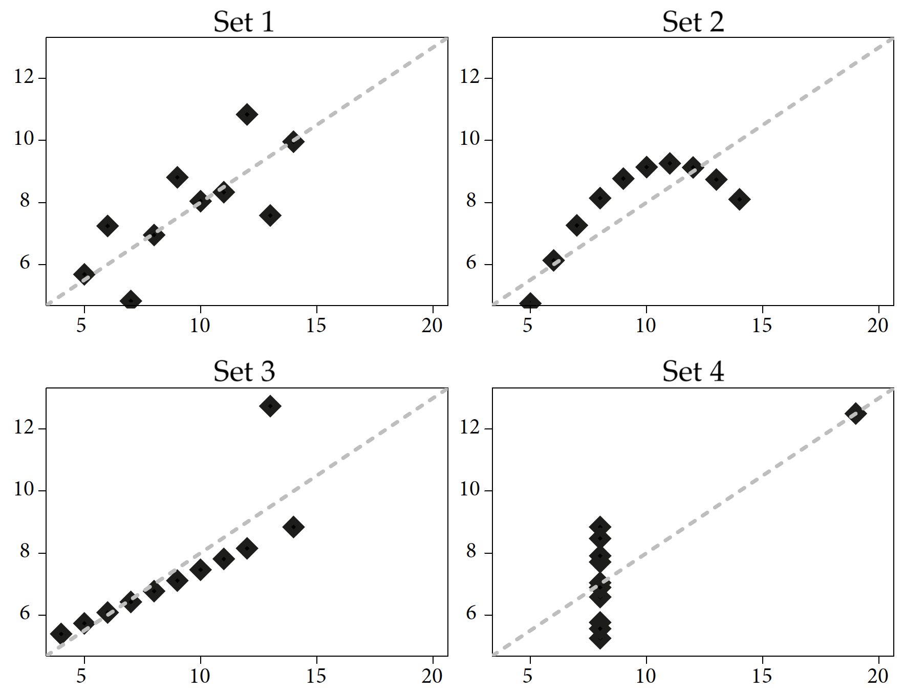
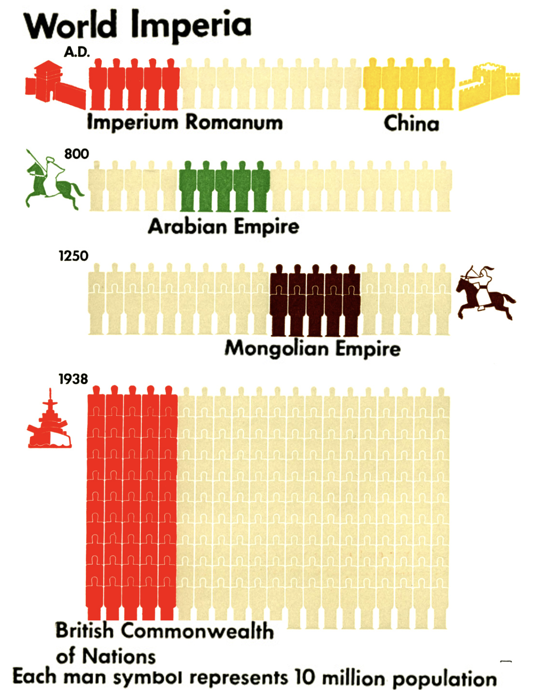
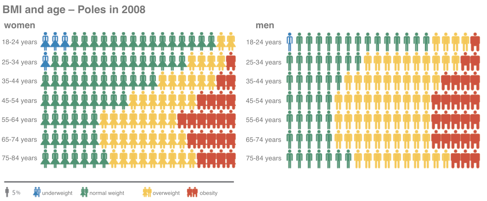

3 Cherries
In this chapter we will look at five examples of exceptional data visualizations that have made history, often changing the fates of many people. Most of this book is devoted to proven recipes for making correct and readable graphs, but remember that graphs are not works of nature, but are invented and improved by generations of scientists eager to communicate complex relationships. The charts presented here are examples of these pioneering innovations, and behind each one is an interesting researcher who came up with it. Here are five charts that any self-respecting data enjoyer must know.
3.1 A plot as a way of fighting an epidemic
Graphs can be the foundations of entirely new scientific and social discoveries. An interesting example of statistical graphics accompanying a scientific revolution is the chart developed by physician Dr. John Snow (1813–1858) concerning the cholera epidemic in London’s Soho in the year 1854. The significant importance of this work is evidenced, among other things, by the fact that thanks to the results of his work on this epidemic, John Snow is considered a forerunner of epidemiology.
Let’s outline the context. The year is 1854. The population of London’s Soho is growing rapidly. There is no sewage system. The waste is stored in septic tanks, located in basements. Unfortunately, the septic tanks are not large enough for the needs of the rapidly growing population and overflow too quickly. London authorities are ordering them to be emptied more frequently by pouring the contents into the river Thames. A cholera epidemic breaks out in London, killing more than 120 people in the first three days, with a total of more than 600 victims. The plague has caused such a panic that a third of Soho residents have fled the city in fear for their lives.
In those days, it was believed that cholera was spread by “murine air”. Let’s remind ourselves that the disease-causing bacteria was not discovered by Louis Pasteur until 7 years later, so both during this epidemic and earlier ones, people really had no idea what they were dealing with. Our protagonist, John Snow, while looking for the cause of the epidemic, talked to residents of the disease-ridden neighborhood. He discovered that all the cases of illness and death were somehow related to the Broad Street water pump. The deaths were mostly of people living in the neighborhood, or children attending school nearby, or people living farther away but drawing water from this pump. We can assume that he noted this by drawing dots on a map of the neighborhood to symbolize a person getting sick where they live/work/go to school.
John Snow could not explain what exactly was causing the disease, but the evidence he gathered was enough to convince London authorities to close the designated water intake. By Snow’s own admission, the epidemic was in its final stages by then, and it is impossible to attribute the end of the epidemic solely to this decision. However, it certainly reduced the number of deaths and contributed to a better understanding of the causes of the epidemic. It was later determined that the germ-spreading water pump was located very close to one of the septic tanks.

The map shown in Figure 3.1 is a beautiful example of how data visualization makes it possible to vividly depict the relationship between various factors, in this case deaths and water intake. In Snow’s case, one can speculate that it was the process of creating the first version of the map that helped him discover the source of the epidemic (Snow 1849).
3.2 A plot as a universal tool of persuasion
As we have seen with the example of the cholera epidemic, statistical graphics are very useful in making scientific discoveries and studying social phenomena. As we will see in a moment, it can also be used as a tool to influence the viewer’s opinion and, consequently, his further decisions. The best-known example of statistical graphics used to elicit a specific reaction, or even used as a means of strong persuasion, were the charts of English nurse and also statistician Florence Nightingale (1820–1910).
Miss Nightingale’s personality plays no small role in this story, so let’s start with a brief introduction to her. A woman who came from a good home (she was an aristocrat) terrified her entire family when she declared that she wanted to become a nurse. In those days, it was absolutely not an occupation for women with high or even middle social status. Nightingale, however, was not one to give up her plans easily. Not only did she become a supervisor of nurses, but at the age of 33 she began organizing hospital care during the Crimean War.
She worked without sufficient medical supplies or food resources. She did what she could to help wounded soldiers. She was known to make systematic rounds of the hospital corridors carrying a lamp, which is why the term the lady with the lamp stuck to her. Was she doing this so that soldiers would not feel lonely and abandoned at night, alone with pain and suffering? Her attitude turned into a symbol. A hundred years later, a film was made under the title The Lady with the Lamp, and references to her appear in the poetry of Henry Longfellow and other poets. She became known as a very determined person. At the same time, her approach to her work is to be admired, as she was not just concerned with ad hoc relief, but was interested in the overall problem and was keen to create good systemic solutions so that others could also benefit from her experience.
During her period of service in the Crimean peninsula, Nightingale discovered that most soldiers died from poor hospital care: infections, malnutrition and other causes that could be remedied by organizing better care. She estimated that of the 18,000 deaths, about 16,000 were due to infections, meaning poor hygiene and debilitation of the sick due to lack of food and inadequate equipment in field hospitals. At the same time, this discovery carried a clear message about what to do to significantly reduce the number of casualties - hospital care had to be better organized. This is obvious today, but at the time it was a revolutionary discovery.
To make her point, Nightingale developed the polar diagram (also known as the Nightingale rose diagram), shown in Figure 3.2, referred to as the coxcomb diagram by the author herself.

From the chart developed by Nightingale, it is easy to read how many deaths were due to treatable diseases, i.e. hospital infections, the effects of malnutrition or poor hospital care. These cases correspond to the color blue. The spacing of the bars makes this color dominate the graph. The numbers of deaths are proportional to the radii of the corresponding segments, but what is more striking is their area – and this is proportional to the square of the radius. This is obviously a manipulation of the way the data is presented, so that the proportion of curable diseases appears even higher than in reality.
This chart not only showed what was wrong with the hospital care system on the battlefield, but was coupled with the author’s clear suggestion that improving hospital care would lead to a significant reduction in war casualties. With its simple form, emphatically stating the facts, it was sufficiently comprehensible to everyone. The chart fulfilled its role very well, it was educational and informative (it presented new facts), and in addition, it was opinionated (thanks to the weight of the information presented), so it led to changes along Nightingale’s lines. Conditions in hospital care improved significantly. In this case, it can be said without any abuse that it was the statistical graphics, the clear and purposeful presentation of data, that led to the saving of thousands of lives and to significant changes in the system of care for the sick.
In 1907, Florence Nightingale became the first woman in history to receive the British Order of Merit.
3.3 A plot as a summary of military campaigns
%William Playfair’s charts are beautiful examples of visualizing data on the economy of a country. John Snow’s chart shows how the common denominator of dozens of deaths can be found through data visualization. Florence Nightingale’s charts demonstrate the persuasive power of a well-designed graphic. Now let’s take a look at a graph about which Edward Tufte (whom we will still meet on one of the next stops of the journey through the history of visualization) wrote: “perhaps the best statistical graphic ever created”.
Let’s start by introducing the author. Charles Minard (1781–1870) was a French civil engineer, and a pioneer when it came to the applications of graphics in engineering and statistics. In 1869 he published a map depicting the history of Napoleon’s invasion of Russia in 1812–13. The beauty of this graphic comes from the simplicity and elegance of presenting complex and multidimensional data.
Dozens of battles and skirmishes, the movements of huge masses of troops, the results of clashes with enemy armies – all this can be read from a single map. The number of men in the armies at each stage of the invasion is shown by the thickness of the sections connecting the various important points of the campaign. Near Kaunas the Napoleonic army consisted of 420,000 soldiers. On the way to Moscow, two smaller divisions separated from the main army, and further east there were a number of battles, as a result of which the the army was dwindling, as shown by the narrowing width of the brown ribbon. Only about 100,000 soldiers reached Moscow. However, these were soldiers without sufficient supplies, as the retreating Russian army left no food supplies.

The retreat began on October 18th due to food shortages and the approaching winter. In the graph, the retreat is marked by a black band, which is simultaneously accompanied by a presentation of the falling temperature (at the bottom of the graphic). The soldiers did not manage to escape the winter and cold. During the retreat the temperature dropped to \(-30\) degrees. Temperature, lack of food, skirmishes with the enemy caused the army to shrink down to 30,000 soldiers on the way back to Kaunas. This was a small fraction of the initial army.
When marking the location of the troops, not only the geographic location was taken into account, but also the dates when the army reached a given position. This makes it possible to track in time the movement of the imperial army, as well as the course of battles (a narrowing ribbon indicates fewer and fewer soldiers after successive bloody skirmishes). The marked falling temperature during the retreat (the invasion took place during reportedly one of the harshest winters in history) makes it easier to understand what other obstacles the soldiers, many of whom came from southern Europe, had to face.
Minard’s map challenges the claim that any good visualization must be simple and immediately readable. It exemplifies that a graphic rich in a variety of information need not at all be a dashboard composed of many simple diagrams.
Minard’s work is not at all simple graphics. It contains many details that can be gradually uncovered, some of which are noticed only after some time. All these details add up to one rich picture of the Napoleonic campaign. Is this what an ideal statistical graphic is? Is it about presenting all the complexity of the phenomenon being described, everything that is important about it, in the form of one multi-layered picture? Certainly, this is a great example of a clear, aesthetically pleasing and informative visualization.
3.4 A plot will demonstrate it better
One of the best-known statistical charts is Anscombe’s quartet, shown below. Frank Anscombe made history in statistical graphics when, in 1973, he constructed and presented four data sets with very interesting properties. Each dataset consists of two variables: x and y. In each dataset, the mean value of the variable x is 9. The variance of this variable in each dataset is 11. The mean of the variable shown on the vertical axis in each dataset is 7.5, and their variances are equal to 4.12. For each of these four datasets, the correlations of the variables on both axes are 0.816, and from the point of view of linear relationships, all these data are best described by the same linear regression model \(y=3+x/2\).
One might get the impression that these are very similar datasets, since they have such a very similar description. But only by drawing the data a very different story hidden in each dataset is revealed.

ggplot2 package.For more than 50 years, researchers have been swayed by correlations that are easily represented by a simple formula, such as using linear regression. Anscombe prepared four datasets so that the basic numerical statistics are identical for them (Anscombe 1973). In each of these four datasets, we have the same means, variances, correlation coefficients, linear regression coefficients, and significance test values for coefficients in linear regression models. From a linear regression point of view, these four data sets are indistinguishable, and in each of these four cases we have the same relationship between a pair of variables.
However, a simple graphical representation of these four data sets illustrates the obvious differences between them. This is a great example of the value of data visualization, which can sometimes tell you more about the data than even a sophisticated statistical model.
3.5 A plot as a tool for teaching
In addition to literacy and numeracy, education related to statistical inference is needed. This will enable society to better understand the world around us and the changes that are taking place in this world.

However, as it turns out, this is not such a new trend at all. Over a century ago, sociologist Otto Neurath argued that statistical graphics should play an educational role for society. To make this possible, it must be understandable and interesting, easy to remember and precise. To this end, Neurath in the 1930s developed the ISOTYPE language, designed to make graphs easy to understand, so that “visual education” of the public is possible based on them.

The ISOTYPE language is a set of symbols and rules, guidelines on how to graphically present information in a way that can be understood by a wide audience. It contains lists of precisely designed signs/pictograms with universal meanings and rules for clear and accurate use of these pictograms to present information. One of the most distinctive rules is the principle of using repetition of a sign to represent magnitude. When comparing two values, one of which is 50% greater than the other, a bar chart would use two bars, one of which would be 50% longer than the other. In certain situations, using the number of repetitions of a pictogram instead of length allows for a clearer and more interesting presentation of a particular value.
This “visual language” was constructed to facilitate the understanding of numerical data describing the modern world. One of the major works created using this language is Modern man in the making (1939) (Neurath 1940), by Otto Neurath. This book presents a collection of interesting statistics about society, showing what the world was like at the time. Today, Otto Neurath’s works are available in the public domain. The drawing by Figure 3.5 is from the latter and shows the size of various empires throughout history.
For more on ISOTYPE language, see the article Młodzi XXL, Eurostat a problem nadwagi i otyłości by Magda Malczynska-Umeda (only available in Polish).
3.6 Tasks
Would you like to learn more epic graphs creating data visualization stories? You just need to do the following tasks.
- One of the founding fathers of graphical data visualization was William Playfair. He invented many ingenious ways of presenting data. Playfair’s work containing these graphs was a real bestseller in his time. Check out the list of various graphs presented on his page at Wikipedia. Which of these charts would you consider the most interesting/breakthrough?
- One of the most interesting charts of all time is the box plot proposed by John Tukey. In the article 40 years of boxplots there is an interesting discussion of various modifications of this chart. Which one do you think is the most informative?
- A very original and ingenious way of presenting data is the stem-and-leaf diagram. You can read more about it on the relevant page in Wikipedia. Can you tell where it is most often used today?